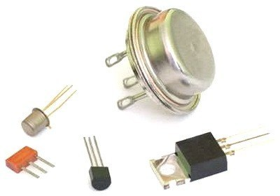
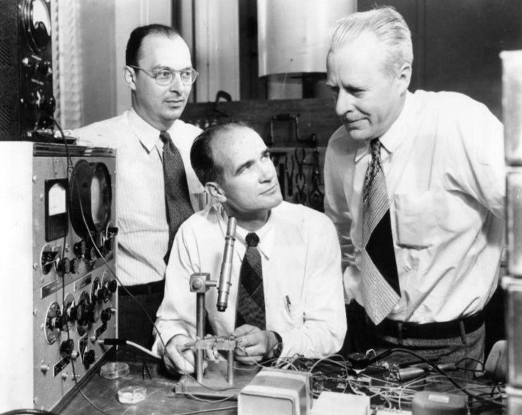
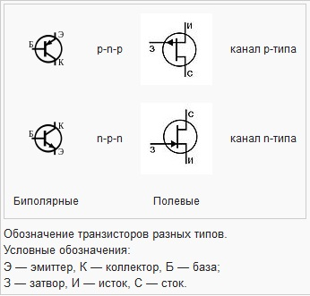

БЛОГ ВЛАДИМИРА КОЛЕСНИЧЕНКО
Охранно-пожарная автоматика и охранное видеонаблюдение
Радио-технологические штучки и мистер Никола Тесла
Цифровая обработка сигналов DSP, и радиосистемы


Транзистор - полупроводниковый триод - радиоэлектронный компонент из полупроводникового
материала, обычно с тремя выводами, способный от небольшого входного сигнала управлять значительным током в
выходной цепи, что позволяет использовать его для усиления, генерирования, коммутации и преобразования электрических
сигналов. В настоящее время транзистор является основой схемотехники подавляющего большинства электронных
устройств и интегральных микросхем.
Транзисторами также называются дискретные электронные приборы, которые, выполняя функцию одиночного транзистора,
имеют в своем составе много элементов, конструктивно являясь интегральной схемой, например составной транзистор или
многие транзисторы большой мощности.
Транзисторы по структуре, принципу действия и параметрам делятся на два класса — биполярные и полевые (униполярные). В биполярном транзисторе используются полупроводники с обоими типами проводимости, он работает за счет взаимодействия двух, близко расположенных на кристалле, p-n переходов и управляется изменением тока через база-эмиттерный переход, при этом вывод эмиттера всегда является общим для управляющего и выходного токов. В полевом транзисторе используется полупроводник только одного типа проводимости, расположенный в виде тонкого канала, на который воздействует электрическое поле изолированного от канала затвора, управление осуществляется изменением напряжения между затвором и истоком. Полевой транзистор, в отличие от биполярного, управляется напряжением, а не током. В настоящее время в аналоговой технике доминируют биполярные транзисторы (БТ) (международный термин — BJT, bipolar junction transistor). В цифровой технике, в составе микросхем (логика, память, процессоры, компьютеры, цифровая связь и т. п.), напротив, биполярные транзисторы почти полностью вытеснены полевыми. В 1990-е годы был разработан новый тип гибридных биполярно-полевых транзисторов — IGBT которые сейчас широко применяются в силовой электронике.
В 1956 году за исследования транзисторного эффекта Уильям Шокли, Джон Бардин и Уолтер Браттейн получили Нобелевскую премию по физике
К 1980-м годам транзисторы, благодаря своей миниатюрности, экономичности, устойчивости к механическим воздействиям и невысокой стоимости практически полностью вытеснили электронные лампы из малосигнальной электроники. Благодаря своей способности работать при низких напряжениях и значительных токах транзисторы позволили уменьшить потребность в электромагнитных реле и механических переключателях в оборудовании, а благодаря способности к миниатюризации и интеграции позволили создать интегральные схемы, заложив основы микроэлектроники. С 1990-х в связи с появлением новых мощных транзисторов, стали активно вытесняться электронными устройствами трансформаторы, электромеханические и тиристорные ключи в силовой электротехнике, начал активно развиваться Частотно-регулируемый привод и инверторные преобразователи напряжения.
На принципиальных схемах транзистор обычно обозначается «VT» или «Q» с добавлением позиционного индекса, например, VT12. До 1970-х гг. в русскоязычной литературе и документации также применялась обозначения Т, ПП (полупроводниковый прибор) или ПТ (полупроводниковый элемент).
Изобретение транзистора
Изобретение транзистора, являющееся одним из важнейших достижений XX века, стало следствием длительного развития полупроводниковой электроники, которое началось в 1833 году, когда Майкл Фарадей провёл первые эксперименты с полупроводниковым материалом - сульфидом серебра.
В 1874 году немецкий физик Карл Фердинанд Браун впервые обнаружил явление односторонней проводимости контакта металл—полупроводник.
В 1906 году инженер Гринлиф Виттер Пиккард изобретает точечный полупроводниковый диод-детектор.
В 1910 году английский физик Уильям Икклз обнаружил у некоторых полупроводниковых диодов способность генерировать электрические колебания, а инженер Олег Лосев в 1922 году самостоятельно разработал диоды, обладающие при некоторых напряжениях смещения отрицательным дифференциальным сопротивлением, с помощью которых впервые успешно использовал усилительные и генераторные свойства полупроводников (Кристадинный эффект), в детекторных и гетеродинных радиоприёмниках собственной конструкции.
Особенностью этого периода развития было то, что физика полупроводников была ещё плохо изучена, все достижения являлись следствием экспериментов, учёные затруднялись объяснить, что происходит внутри кристалла, часто выдвигая ошибочные гипотезы.
В то же время на рубеже 1920—1930 годов в радиотехнике началась эпоха бурного индустриального развития электронных ламп, физика которых была изучена, и в этом направлении работала основная масса учёных-радиотехников, в то время как хрупкие и капризные полупроводниковые детекторы открытой конструкции, в которых нужно было при помощи металлической иглы вручную искать на кристалле «активные точки», стали уделом кустарей-одиночек и радиолюбителей, строивших на них простейшие радиоприемники. Потенциальных перспектив полупроводников никто не видел.
Создание биполярного и полевого транзисторов произошло разными путями.
Полевой транзистор
Перввц шаг в создании полевого транзистора сделал австро-венгерский физик Юлий Эдгар Лилиенфельд, который предложил метод управления током в образце путём подачи на него поперечного электрического поля, которое, воздействуя на носители заряда, будет управлять проводимостью. Патенты были получены в Канаде (22 октября 1925 года) и Германии (1928 год).
В 1934 году немецкий физик Оскар Хайл (англ.)русск. в Великобритании также запатентовал «бесконтактное реле», основанное на аналогичном принципе. Однако несмотря на то, что полевые транзисторы основаны на простом электростатическом эффекте поля и по протекающим в них физическим процессам проще биполярных, создать работоспособный образец полевого транзистора долго не удавалось.
Создатели не могли обойти неизвестные на тот момент явления в поверхностном слое полупроводника, которые не позволяли управлять электрическим полем внутри кристалла у транзисторов такого типа (МДП-транзистор — металл, диэлектрик, полупроводник). Работоспособный полевой транзистор был создан уже после открытия биполярного транзистора. В 1952 году Уильям Шокли теоретически описал модель полевого транзистора другого типа, модуляция тока в котором, в отличие от ранее предложенных МДП[8] структур, осуществлялась изменением толщины проводящего канала за счёт расширения или сужения обеднённой области, прилегающего к каналу р-n-перехода. Это происходило при подаче на переход управляющего напряжения запирающей полярности затворного диода. Транзистор получил название «полевой транзистор с управляющим р-n-переходом» (мешающие работе поверхностные явления устранялись, так как проводящий канал находился внутри кристалла).
Первый полевой МДП-транзистор, запатентованный ещё в 1920-е годы и сейчас составляющий основу компьютерной индустрии, впервые был создан в 1960 году После работ американцев Канга и Аталлы, предложивших в качестве слоя затворного диэлектрика формировать на поверхности кремниевого кристалла с помощью окисления поверхности кремния тончайший слой диоксида кремния, изолирующий металлический затвор от проводящего канала, такая структура получила название МОП-структура (Металл-Окисел-Полупроводник).
В 90-х годах XX века МОП-технология стала доминировать над биполярной,
Биполярный транзистор
В отличие от полевого, первый биполярный транзистор создавался экспериментально, а его физический принцип действия был объяснён уже позднее.
 В 1929—1933 гг., в ЛФТИ, Олег Лосев под руководством А. Ф. Иоффе провёл ряд экспериментов с полупроводниковым устройством, конструктивно повторяющим точечный транзистор на кристалле карборунда (SiC), однако достаточного коэффициента усиления получить тогда не удалось. Изучая явления электролюминесценции в полупроводниках, Лосев исследовал около 90 различных материалов, особенно выделяя кремний, и в 1939 году он вновь упоминает о работах над трёхэлектродными системами в своих записях, но начавшаяся война и гибель инженера в блокадном Ленинграде зимой 1942 года привели к тому, что некоторые его работы оказались утеряны и сейчас неизвестно, насколько далеко он продвинулся в создании транзистора. В начале 1930-х годов точечные трёхэлектродные усилители изготовили также радиолюбители Ларри Кайзер из Канады и Роберт Адамс из Новой Зеландии, однако их работы не были запатентованы и не подвергались научному анализу.
Успеха добилось опытно-конструкторское подразделение Bell Telephone Laboratories фирмы American Telephone and Telegraph, с 1936 года в нём, под руководством Джозефа Бекера, работала группа ученых специально нацеленная на создание твердотельных усилителей. До 1941 года изготовить полупроводниковый усилительный прибор не удалось (предпринимались попытки создания прототипа полевого транзистора). После войны, в 1945 году, исследования возобновились под руководством физика-теоретика Уильяма Шокли, после ещё 2 лет неудач, 16 декабря 1947 года, исследователь Уолтер Браттейн, пытаясь преодолеть поверхностный эффект в германиевом кристалле и экспериментируя с двумя игольчатыми электродами, перепутал полярность приложенного напряжения и неожиданно получил устойчивое усиление сигнала. Последующее изучение открытия, совместно с теоретиком Джоном Бардиным показало, что никакого эффекта поля нет, в кристалле идут ещё не изученные процессы, это был не полевой, а неизвестный прежде, биполярный транзистор. 23 декабря 1947 года состоялась презентация действующего макета изделия руководству фирмы, эта дата стала считаться датой рождения транзистора. Узнав об успехе, уже отошедший от дел Уильям Шокли, вновь подключается к исследованиям и за короткое время создает теорию биполярного транзистора, в которой уже наметил замену точечной технологии изготовления, более перспективной, плоскостной.
Первоначально новый прибор назывался «германиевый триод» или «полупроводниковый триод», по аналогии с вакуумным триодом — электронной лампой схожей структуры, в мае 1948 года в лаборатории прошел конкурс на оригинальное название изобретения, в котором победил Джон Пирс (John R. Pierce), предложивший слово «transistor», образованное путём соединения терминов «transconductance» (активная межэлектродная проводимость) и «variable resistor» или «varistor» (переменное сопротивление, варистор) или, по другим версиям, от слов «transfer» — передача и «resist» — сопротивление.
30 июня 1948 г. в штаб-квартире фирмы в Нью-Йорке состоялась официальная презентация нового прибора, на транзисторах был собран радиоприемник. И все же, мировой сенсации не состоялось, первоначально открытие не оценили по достоинству, ибо первые точечные транзисторы, в сравнении с электронными лампами, имели очень плохие и неустойчивые характеристики.
В 1956 году Уильям Шокли (en:William Shockley), Уолтер Браттейн (en:Walter Houser Brattain) и Джон Бардин (en:John Bardeen) были награждены Нобелевской премией по физике «за исследования полупроводников и открытие транзисторного эффекта»[10]. Интересно, что Джон Бардин вскоре был удостоен Нобелевской премии вторично за создание теории сверхпроводимости.
Создание биполярного транзистора в Европе
Параллельно с работами американских ученых, в Европе, биполярный транзистор был создан физиком-экспериментатором Гербертом Матаре (en:Herbert Mataré) и теоретиком Генрихом Велкером (en:Heinrich Welker). В 1944 году, Герберт Матаре, работая в фирме Телефункен, разработал полупроводниковый «дуодиод» (двойной диод), который, конструктивно был похож на будущий точечный биполярный транзистор. Прибор использовался в качестве смесителя в радиолокационной технике, как два, близких по параметрам, выпрямительных точечных диода, выполненных на одном кристалле германия. Тогда же Матаре впервые обнаружил влияние тока одного диода на параметры другого и начал исследования в этом направлении. После войны Герберт Матаре, в Париже, встретился с Иоганном Велкером, где оба физика работая в филиале американской корпорации Westinghouse Electric, продолжили эксперименты над дуодиодом в инициативном порядке. В начале июня 1948 года, ещё не зная о результатах исследований группы Шокли в Bell Labs, они на основе дуодиода создали стабильно работающий биполярный транзистор, который был назван «транзитрон», однако, патентная заявка на изобретение, отправленная в августе 1948 года, рассматривалась французским бюро патентов очень долго и только в 1952 году был получен патент на изобретение. Серийно выпускаемые фирмой Westinghouse транзитроны, несмотря на то что по качеству они успешно конкурировали с транзисторами, также не смогли завоевать рынок и вскоре работы в этом направлении прекратились.
Развитие транзисторов технологий
Несмотря на миниатюрность и экономичность, первые транзисторы отличались высоким уровнем шумов, маленькой мощностью, нестабильностью характеристик во времени и сильной зависимостью параметров от температуры. Точечный транзистор, не являясь монолитной конструкцией, был чувствителен к ударам и вибрациям. Фирма-создатель Bell Telephone Laboratories не оценила перспективы нового прибора, выгодных военных заказов не ожидалось и лицензия на изобретение вскоре начала продаваться всем желающим за 25 тыс. долларов. В 1951 году был создан плоскостной транзистор, конструктивно представляющий собой монолитный кристалл полупроводника, и примерно в это же время появились первые транзисторы на основе кремния. Характеристики транзисторов быстро улучшались и вскоре они стали активно конкурировать с электронными радиолампами.
Позднее транзисторы заменили вакуумные лампы в большинстве электронных устройств, совершив революцию в создании интегральных схем и компьютеров. В начале 21-го века транзистор стал одним из самых массовых изделий, производимых человечеством. В 2013 году на каждого жителя Земли было выпущено около 15 миллиардов транзисторов (большинство из них — в составе интегральных схем).
С появлением интегральных микросхем началась борьба за уменьшение размера элементарного транзистора. В 2012 году самые маленькие транзисторы содержали считанные атомы вещества[12]. Транзисторы стали основной частью компьютеров и других цифровых устройств. В некоторых конструкциях процессоров их количество превышало миллиард штук.
Классификация транзисторов
 Ниже приведена формальная классификация транзисторов, где ток образуется потоком носителей заряда, а состояния, между которыми переключается прибор, определяются по величине сигнала: малый сигнал — большой сигнал, закрытое состояние — открытое состояние, на которых реализуется двоичная логика работы транзистора. Современная технология может оперировать не только электрическим зарядом, но и магнитными моментами, спином отдельного электрона, фононами и световыми квантами, квантовыми состояниями в общем случае.По основному полупроводниковому материалу
Помимо основного полупроводникового материала, применяемого обычно в виде легированного в некоторых частях монокристалла, транзистор содержит в своей конструкции металлические выводы, изолирующие элементы, корпус (пластиковый, металлостеклянный или металлокерамический). Иногда употребляются
По структуре
- Биполярные
- p-n-p
- n-p-n
- Полевые
- С затвором в виде p- n- перехода
- С каналом n-типа
- С каналом p-типа
- с индуцированным каналом
- С каналом n-типа
- С каналом p-типа
- Биполярные
- p-n-p
- n-p-n
- Полевые
- С затвором в виде p- n- перехода
- С каналом n-типа
- С каналом p-типа
- с индуцированным каналом
- С каналом n-типа
- С каналом p-типа
Принцип действия и способы применения транзисторов существенно зависят от типа и внутренней структуре
- Биполярные
- n-p-n структуры, "обратной проводимости
- p-n-p структуры, прямой проводимости<
В биполярном транзисторе носители заряда движутся от эмиттера через тонкую базу к коллектору. База отделена от эмиттера и коллектора p-n переходами. Ток протекает через транзистор лишь тогда, когда носители заряда инжектируются из эмиттера в базу через p-n переход. В базе они являются неосновными носителями заряда и легко захватываются другим p-n переходом между базой и коллектором, ускоряясь при этом. В базовом слое носители заряда распространяются за счёт диффузионного механизма, если нет градиента легирующей примеси в слое базы, или по действием электрического поля при неравномерном легировании базы, для повышения быстродействия прибора толщина базового слоя должна быть как можно тоньше, но чрезмерное снижение толщины базы вызывает снижение предельно допустимого напряжения коллектора. Управление током между эмиттером и коллектором осуществляется изменением напряжения между базой и эмиттером, от которого зависят условия инжекции носителей заряда в базу и ток базы.
В полевом транзисторе ток протекает от истока к стоку через канал под затвором. Канал существует в легированном полупроводнике в промежутке между затвором и нелегированной подложкой, в которой нет носителей заряда, и она не может проводить ток. Преимущественно под затвором существует область обеднения, в которой тоже нет носителей заряда благодаря образованию между легированным полупроводником и металлическим затвором контакта Шоттки. Таким образом ширина канала ограничена пространством между подложкой и областью обеднения. Приложенное к затвору напряжение увеличивает или уменьшает ширину области обеднения и, тем самым, площадь поперечного сечения канала, управляя током стока и равного ему током истока.
Другие разновидности транзисторов
- Однопереходные транзисторы
- Баллистические транзисторы.
- Одномолекулярный транзистор
- Фототранзистор
Составной транзистор
- Транзисторы со встроенными резисторами ((Resistor-equipped transistors (RETs)) — биполярные транзисторы со встроенными в один корпус резисторами.
- Транзистор Дарлингтона, пара Шиклаи — комбинация двух биполярных транзисторов, работающая как биполярный транзистор с высоким коэффициентом усиления по току
- на транзисторах одной структуры
- на транзисторах разной структуры
- Лямбда-диод — двухполюсник, сочетание из двух полевых транзисторов, имеющая, как и туннельный диод, значительный участок с отрицательным дифференциальным сопротивлением.
- Биполярный транзистор, управляемый полевым транзистором с изолированным затвором (IGBT) — силовой электронный прибор, предназначенный, в основном для управления электрическими приводами.
По мошности
По рассеиваемой в виде тепла мощности различают:
- маломощные транзисторы до 100 мВт;
- транзисторы средней мощности от 0,1 до 1 Вт
- мощные транзисторы (больше 1 Вт).
По исполнению
- Диcкретные транзисторы
- корпусные
- корпусные
- для свободного монтажа
- для установки на радиатор
- для автоматизированных систем пайки
- безкорпусные
- Транзисторы в составе микросхем
По материалу и контрукции корпуса
- В металлостеклянном/металлокерамическом корпусе
- В пластмассовом корпусе
Материал корпуса — металл. Материал изоляторов, через которые проходят выводы — стекло, либо керамика. Имеют наибольший диапазон температур окружающей среды и максимальную защищённость от воздействия внешних факторов.
Отличаются меньшей стоимостью и более мягкими допустимыми условиями эксплуатации. У мощных приборов в пластмассовом корпусе кроме выводов часто имеется металлический теплоотвод — кристаллодержатель для монтажа прибора на внешний радиатор.
Прочие типы
- Одноэлектронные транзисторы содержат квантовую точку (т. н. «остров») между двумя туннельными переходами. Ток туннелирования управляется напряжением на затворе, связанном с ним ёмкостной связью
- Биотранзистор
Схемы включения биполярного транзисторов
- с общим эмиттером (ОЭ) — осуществляет усиление как по току, так и по напряжению — наиболее часто применяемая схема
- с общим коллектором (ОК) — осуществляет усиление только по току — применяется для согласования высокоимпедансных источников сигнала с низкоомными сопротивлениями нагрузок
- с общей базой (ОБ) — усиление только по напряжению, в силу своих недостатков в однотранзисторных каскадах усиления применяется редко (в основном в усилителях СВЧ), обычно в составных схемах (например, каскодных).
Схемы включения полевого транзистора
Полевые транзисторы, как с p-n переходом (канальные), так и МОП (МДП) имеют следующие схемы включения:
- с общим истоком (ОИ) — аналог ОЭ биполярного транзистора
- с общим стоком (ОС) — аналог ОК биполярного транзистора
- с общим затвором (ОЗ) — аналог ОБ биполярного транзистора
Схемы с открытым коллекктором (стоком)
Открытым коллектором (стокос) называют включение транзистора по схеме с общим эмиттером (истоком) в составе электронного модуля или микросхемы, когда коллекторный (стоковый) вывод не соединяется с другими элементами модуля (микросхемы), а непосредственно выводится наружу (на разъем модуля или вывод микросхемы). Выбор нагрузки транзистора и тока коллектора (стока) при этом оставляется за разработчиком конечной схемы, в составе которой применяются модуль или микросхема. В частности, нагрузка такого транзистора может быть подключена к источнику питания с более высоким или низким напряжением, чем напряжение питания модуля/микросхемы. Такой подход значительно расширяет рамки применимости модуля или микросхемы за счет небольшого усложнения конечной схемы. Транзисторы с открытым коллектором (стоком) применяются в логических элементах ТТЛ, микросхемах с мощными ключевыми выходными каскадами,
Реже применяется обратное включение — с открытым эмиттером (истоком). Оно также позволяет выбирать нагрузку транзистора изменением внешних компонентов подавать на эмиттер/сток напряжение полярности, противоположной напряжению питания основной схемы (например, отрицательное напряжение для схем с биполярными транзисторами n-p-n или N-канальными полевыми), и т. п.
Применение транзисторов
- Источник питания питает электрической энергией нагрузку, которой может быть громкоговоритель, реле, лампа накаливания, вход другого, более мощного транзистора, электронной лампы и т. п. Именно источник питания даёт нужную мощность для «раскачки» нагрузки.
- Транзистор же используется для ограничения силы тока, поступающего в нагрузку, и включается в разрыв между источником питания и нагрузкой. То есть транзистор представляет собой некий вариант полупроводникового резистора, сопротивление которого можно очень быстро изменять
- Выходное сопротивление транзистора меняется в зависимости от напряжения на управляющем электроде. Важно то, что это напряжение, а также сила тока, потребляемая входной цепью транзистора, гораздо меньше напряжения и силы тока в выходной цепи.
Надо заметить, что это положение не всегда верно: так в схеме с общим коллектором (ОК) ток на выходе в β раз больше, чем на входе, напряжение же на выходе несколько ниже входного; в схеме с общей базой увеличивается напряжение на выходе по сравнению с входом, но выходной ток немного меньше входного. Таким образом, в схеме ОК происходит усиление только по току, а в схеме ОБ — только по напряжению. За счёт контролируемого управления источником питания достигается усиление сигнала либо по току, либо по напряжению либо по мощности (схемы с общим эмиттером — ОЭ).
- Если мощности входного сигнала недостаточно для "раскачки" входной цепи применяемого транзистора, или конкретный транзистор не даёт нужного усиления применяют каскадное включение транзисторов, когда более чувствительный и менее мощный транзистор управляет энергией источника питания на входе более мощного транзистора. Также подключение выхода одного транзистора ко входу другого может использоваться в генераторных схемах типа мультивибратора. В этом случае применяются одинаковые по мощности транзисторы.
Транзистор применяется в:
- Усилительных схемах. Работает, как правило, в усилительном режиме
Существуют экспериментальные разработки полностью цифровых усилителей, на основе ЦАП, состоящих из мощных транзисторов[20][21]. Транзисторы в таких усилителях работают в ключевом режиме.
- Генераторах сигналов - в зависимости от типа генератора транзистор может использоватся либо в ключевом (генерация прямоугольных сигналов), либо в линейном усилительном режиме (генерация сигналов произвольной формы).
- Электронных кдючах - Транзисторы работают в ключевом режиме. Ключевые схемы можно условно назвать усилителями (регенераторами) цифровых сигналов Иногда электронные ключи применяют и для управления силой тока в аналоговом виде. Это применяется, когда нагрузка обладает достаточно большой инерционностью, а напряжение и сила тока в ней регулируются не амплитудой, а шириной импульсов. На подобном принципе основаны бытовые диммеры для ламп накаливания и нагревательных приборов, а также импульсные источники питания, приводы электродвигателей
Транзисторы применяются в качетсве активных (усилительных) элементов в усилительных и переключательных каскадах.
Реле и тиристоры имеют больший коэффициент усиления по мощности, чем транзисторы, но работают только в ключевом (переключательном) режиме.
Вся современная цифровая техника построена, в основном, на полевых МОП (металл-оксид-полупроводник)-транзисторах (МОПТ), как более экономичных, по сравнению с БТ, элементах. Иногда их называют МДП (металл-диэлектрик-полупроводник)-транзисторы. Международный термин — MOSFET (metal-oxide-semiconductor field effect transistor). Транзисторы изготавливаются в рамках интегральной технологии на одном кремниевом кристалле (чипе) и составляют элементарный «кирпичик» для построения микросхем логики, памяти, процессора и т. п. Размеры современных МОПТ составляют от 90 до 8 нм
В настоящее время на одном современном кристалле площадью 1—2 см² могут разместиться несколько (пока единицы) миллиардов МОПТ. На протяжении 60 лет происходит уменьшение размеров (миниатюризация) МОПТ и увеличение их количества на одном чипе (степень интеграции), в ближайшие годы ожидается дальнейшее увеличение степени интеграции транзисторов на чипе (см. Закон Мура). Уменьшение размеров МОПТ приводит также к повышению быстродействия процессоров, снижению энергопотребления и тепловыделения.
В настоящее время микропроцессоры Intel собираются на трёхмерных транзисторах (3d транзисторы), именуемых Tri-Gate. Эта революционная технология позволила существенно улучшить существующие характеристики процессоров. Отметим, что переход к 3D-транзисторам при технологическом процессе 22 нм позволил повысить производительность процессоров на 30 % (по оценкам Intel) и снизить энергопотребление [источник не указан 2716 дней]. Примечательно, что затраты на производство возрастут всего на 2—3 %, то есть новые процессоры не будут значительно дороже старых[источник не указан 2716 дней]. Суть этой технологии в том, что сквозь затвор транзистора проходит особый High-K диэлектрик, который снижает токи утечки.
Сравнение с электронными лампами
До разработки транзисторов вакуумные (электронные) лампы (или просто «лампы») были основными активными компонентами электронного оборудования. По принципу управления наиболее родственен электронной лампе полевой транзистор, многие соотношения, описывающие работу ламп, пригодны и для описания работы полевых транзисторов. Многие схемы, разработанные для ламп, стали применяться для транзисторов и получили развитие, поскольку электронные лампы имеют только один тип проводимости — электронный, а транзисторы могут иметь как электронный, так и дырочный тип проводимости (эквивалент воображаемой «позитронной лампы»). Это привело к широкому использованию комплементарных схем (КМОП).
Преимущества
Основные преимущества, которые позволили транзисторам заменить своих предшственников (вакуумные лампы) в большинстве электронных устройств:
- малые размеры и небольшой вес, что способствует развитию миниатюризации электронных устройств
- высокая степень автоматизации и групповой характер операций на многих этапах технологического процесса изготовления, что ведёт к постоянному снижению удельной стоимости при массовом производстве;
- низкие рабочие напряжения, что позволяет использовать транзисторы в небольших по габаритам и энерговооруженности электронных устройствах с питанием от малогабаритных электрохимических источников тока;
- не требуется дополнительного времени на разогрев катода после включения, что позволяет достичь почти мгновенной готовности к работе транзисторных устройств сразу после подачи питания;
- малая, по сравнению с лампами, рассеиваемая мощность, в том числе из-за отсутствия разогрева катода, что способствует повышению энергоэффективности, облегчает отвод избыточного тепла и позволяет повышать компактность устройств
- высокая надёжность и бо́льшая физическая прочность, стойкость к механическим ударам и вибрации, что позволяет избежать проблем при использовании устройств в условиях любых ударных и вибрационных нагрузок
- очень продолжительный срок службы — некоторые транзисторные устройства находились в эксплуатации более 50 лет и при этом не потеряли своей работоспособности возможность объединения множества элементов в едином миниатюрном конструктивном модуле позволяет значительно повысить степень интеграции и облегчает разработку комбинированных схем высокой сложности, что не представляется возможным с вакуумными лампами.
Недостатки
- Обычные кремниевые транзисторы не работают при напряжениях выше 1 кВ, вакуумные лампы могут работать с напряжениями на несколько порядков выше 1 кВ
(для коммутации цепей с напряжением свыше 1 кВ разработаны IGBT транзисторы) - Применение транзисторов в мощных радиовещательных и СВЧ передатчиках нередко оказывается технически и экономически нецелесообразным: требуется
параллельное включение и согласование многих сравнительно маломощных усилителей. Мощные и сверхмощные генераторные лампы с воздушным или водяным
охлаждением анода, а также магнетроны, клистроны, лампы бегущей волны (ЛБВ) обеспечивают лучшее соотношение частотных характеристик, мощностей и
приемлемой стоимости. - Транзисторы значительно более уязвимы, чем вакуумные лампы, к действию сильных электромагнитных импульсов, которые, в том числе, являются одним из
поражающих факторов ядерного взрыва - Чувствительность к радиации и воздействию космических излучений (созданы специальные радиационно-стойкие микросхемы для электронных устройств
космических аппаратов).